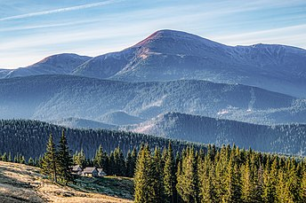

Зміст
Говерла
Матеріал
з Вікіпедії — вільної енциклопедії.
Гове́рла (пол. Howerla, рум. Hovârla, угор. Hóvár) — найвища вершина Українських Карпат і найвища точка України, її висота становить 2 061 м над рівнем моря. Розташована в гірському масиві Чорногора на межі Надвірнянського району Івано-Франківської області та Рахівського району Закарпатської області, за 17 кілометрів від кордону з Румунією.
Походження назви
Походження назви гори суперечливе[2]. Українські мовознавці переважно стверджують, що топонім «Говерла» походить із рум. howârla, що означає «важкопрохідне підняття»[2][3][4]. Деякі джерела виводять назву гори від угор. hóvár — «сніговий замок»[5], але набагато ймовірнішою є думка, що угорське найменування — це модифікація української назви[6]. Угорські джерела на межі XIX— XX ст. згадують гору під іменем Hoverla[7], водночас в «Етимологічному словнику географічних назв» не наведено назви Hóvár[6]. Угорське походження малоймовірне й через те, що, за сучасними даними, на горі ніколи не було замку, а модифікація Hoverla — Hóvár не має задовільного лінгвістичного пояснення[6]. Найвірогідніше, назва Hóvár з'явилася близько 1940 року одночасно з мадяризацією деяких інших топонімів Закарпаття та Мармарощини[6].
Географія
Гора має конусоподібну форму. На схилах — форми плейстоценового зледеніння, каменепади. Бувають снігові лавини. Складається з пісковиків і конгломератів. Укрита альпійськими луками, чагарниковими пустищами, подекуди — кам'яні оси́пища. Зі східного боку від вершини — один із витоків річки Прут, Прутський водоспад, загальна висота якого становить близько 80 метрів. Гора розміщена у межах природоохоронних територій: Карпатського біосферного заповідника (Закарпаття) і Карпатського національного природного парку (Івано-Франківська область).
Схили гори вкриті буковими та смерековими лісами. На висоті 1 500 м починається субальпійський пояс пасовищ, відомий як полонини.
Через популярність серед туристів має високий рівень засміченості привершинної ділянки, а також знищений рослинний покрив на вершині[джерело?]. Говерла «потерпає від масових сходжень, після яких у горах залишаються безліч сміття і гектари витоптаних високогірних лугів»[8]. За розрахунками фахівців[хто?], екологічне навантаження на Говерлу не має перевищувати 200 осіб на добу[8].
Туризм
Популярний об'єкт літнього та зимового туризму. Перший туристичний маршрут зі сходження на вершину був відкритий 1880 року. Взимку альпіністським сходженням на Говерлу присвоєна категорія 1Б.
У кінці березня щорічно, починаючи з 1964 року, відбувається «Говерляна» — традиційний масовий похід-сходження на г. Говерлу, який присвячується відкриттю спортивного літнього сезону на Львівщині й пам'яті загиблих товаришів-альпіністів і туристів. Сходження здійснюється за маршрутом: зі сторони селища Ворохта Івано-Франківської області ущелиною річки Прут — через Карпатський національний природний парк та урочище «Заросляк». Організатори походу — Управління фізичної культури та спорту Львівської обласної державної адміністрації, Федерація спортивного туризму України, Львівська обласна федерація спортивного туризму за активної участі Львівського туристично-альпіністського центру «Скеля»[9].
Туристичні стежки
Szlak czerwony.svg — по червоному маркеру з гори Брескул. Приблизний час ходьби по маршруту: 1 год, ↓ 1 год.
Szlak niebieski.svg — по синьому маркеру з бази «Заросляк», до якої добираються з села Ворохта. Приблизний час ходьби по маршруту: 3 год, ↓ 2 год.
Szlak zielony.svg — по зеленому маркеру з бази «Заросляк» через полонину Козьмеска та гору Мала Говерла. Приблизний час ходьби по маршруту: 3 год, ↓ 2 год.
Szlak zielony.svg — по зеленому маркеру з села Лазещина до урочища Козьмещик, далі Szlak zielony.svg — по зеленому маркеру, далі Szlak żółty.svg — по жовтому маркеру до полонини Козьмеска, далі Szlak zielony.svg — по зеленому маркеру через гору Мала Говерла. Приблизний час ходьби по маршруту: 7 год, ↓ 6 год.
Szlak zielony.svg — по зеленому маркеру з села Лазещина до урочища Козьмещик, далі Szlak żółty.svg — по жовтому маркеру через полонину Ґропа. Приблизний час ходьби по маршруту: 6,45 год, ↓ 5,45 год.
Szlak czerwony.svg — по червоному маркеру з гори Петрос через полонину Головчеська, полонину Скопеска та притулок «Високогір'я Карпат». Приблизний час ходьби по маршруту: 4 год, ↓ 4 год.
Інформаційно-туристичний центр «Високогір'я Карпат» — перший об'єкт інфраструктури у високогірній частині Чорногірського хребта[10], відкритий у Карпатському біосферному заповіднику 7 липня 2011 року[11]. Тематичне спрямування експозиції — екосистеми високогір'я та традиційне господарювання Закарпатської Гуцульщини[10]. На базі центру облаштований рекреаційний притулок на 29 місць[10].
Інциденти
У 1958 році групу з 12 туристів засипала лавина у «лі́йці» при спробі траверсувати купол Говерли з північно-західного гребеня на сідловину між Говерлою та Петросом. У цій групі загинув відомий київський альпініст[хто?].
У 1960 році трапився нещасний випадок, пов'язаний із загибеллю 20 туристів, які здійснювали траверс Говерла—Петрос. Їх теж забрала лавина в ту ж «лі́йку». За зиму в ній накопичується стільки снігу, що в обох випадках знайти загиблих вдалося тільки влітку.
Військова історія
Під час Другої світової війни територію Говерли контролював підрозділ УПА-Захід Воєнна округа ВО-4 «Говерла» (Івано-Франківська область, Північна Буковина), до складу якої входило 8 тис. повстанців влітку 1944 р. та 5 тис. повстанців влітку 1945 р.
Політичні акції
1989 року на день народження Тараса Шевченка ентузіасти піднялися на Говерлу. Випущений бронзовий знак із засніженими вершинами Говерли і портретом молодого національного героя[д
З 1990 року 16 липня, у день прийняття Декларації про державний суверенітет України, громадські організації традиційно піднімають на вершині Говерли Державний Прапор України, зокрема, в рамках акцій «Прапор — на вершину!». З 16 липня 1990 року на честь прийняття Декларації про незалежність України група ентузіастів Народного Руху України щороку в цей день піднімається на Говерлу зі сторони Заросляка з долини річки Лазещина і встановлює прапор України на геодезичному знаку[джерело?].
Щороку до Дня Незалежності й Дня Конституції України відбуваються масові сходження на вершину народних депутатів.
Щороку польські націоналісти організовують походи на Говерлу і відновлюють прикордонні знаки із зображенням польського герба[джерело?].
З нагоди 5–ї річниці Дня Незалежності України на Говерлі встановили плиту з вмонтованими капсулами з землею з усіх областей України.
До 18–ї річниці проголошення Акту про державний суверенітет України на вершині гори встановили великий металевий хрест, скульптурний монумент з українським тризубом (що зазнав вандалізму 2007 року)[12] і бетонний стовп.
У день 21–ї річниці Конституції України на найвищій горі України учасники акції у рамках Всеукраїнського проекту «Пліч–о–пліч» під назвою «Величаю Вас, Карпати!» розгорнули найдовший Державний прапор (110-метровий стяг вагою кількадесят кілограмів), встановивши національний рекорд[13].
Світлини
Див. також
Примітки
Gora Goverla, Ukraine. Peakbagger.com[d], (англ.). Процитовано 24-10-2018.
Máramaros megye helységneveinek etimológiai szótára [Архівовано 16 квітня 2021 у Wayback Machine.] / Sebestyén Zsolt. — Nyíregyháza : Bessenyei, 2012. — 59 o. — ISBN 978-615-5097-53-9.(угор.)
Янко М. Т. Топонімічний словник України: Словник-довідник. — К. : Знання, 1998. — 432 с. — ISBN 5-7707-9443-7., який у свою чергу посилається на Лящук Б. Ф. До походження географічних назв на території Покутсько-Буковинських Карпат і прилеглих районів // Вісн. Львів. ун-ту: Сер. геогр. — Львів, 1962. — Вип.1.
Джерела
Література
Природа України. Гірські вершини України [Архівовано 2 квітня 2015 у Wayback Machine.]
Українські Карпати — г. Говерла (Фотогалерея) [Архівовано 19 червня 2006 у Wayback Machine.]
Карти радіолюбительських квадратів